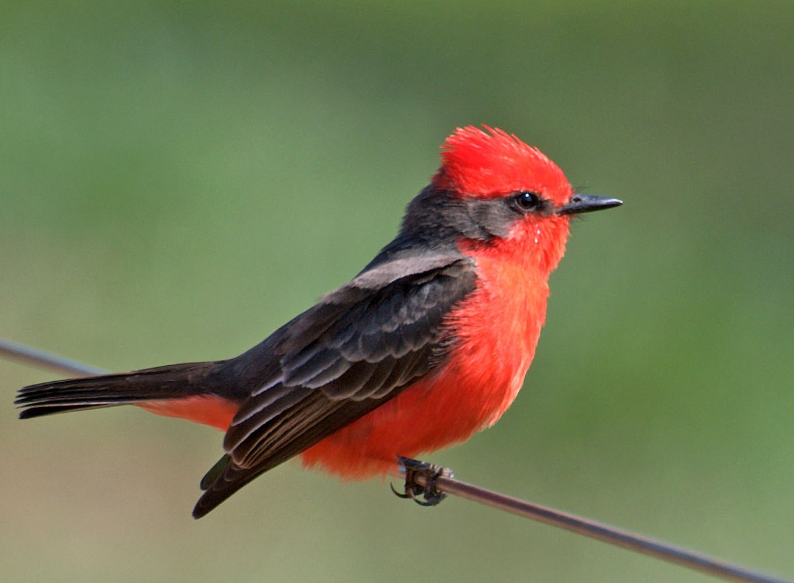

Sección 1. Te damos la bienvenida a nuestro sitio web.
Te encuentras en una página donde se ven de manifiesto las diferentes propiedades que pueden tener los elementos en una página web. Los elementos que aquí se van a modificar son: header, nav, main, aside y footer. Además, se añadiran más elementos como imágenes, SVG, botones, etc. Algunas de las propiedades que se van a modificar son: color, font-size, font-family, line-height, padding, margin, border, etc.
Imágenes
A continuación se muestran imágenes en distintos formatos:


Botones
Sección 2
Aquí va un SVG insertado con diferentes métodos, al que le aplicaremos CSS y animación.